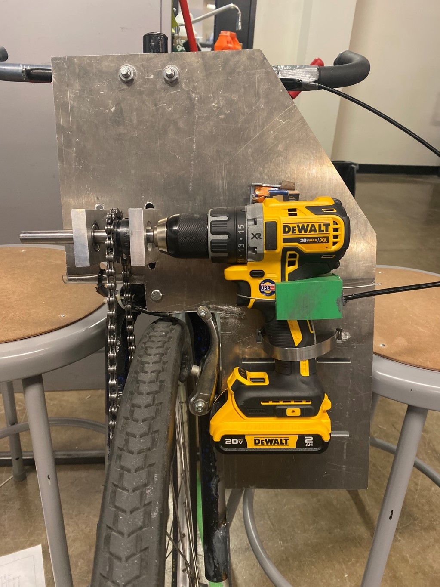
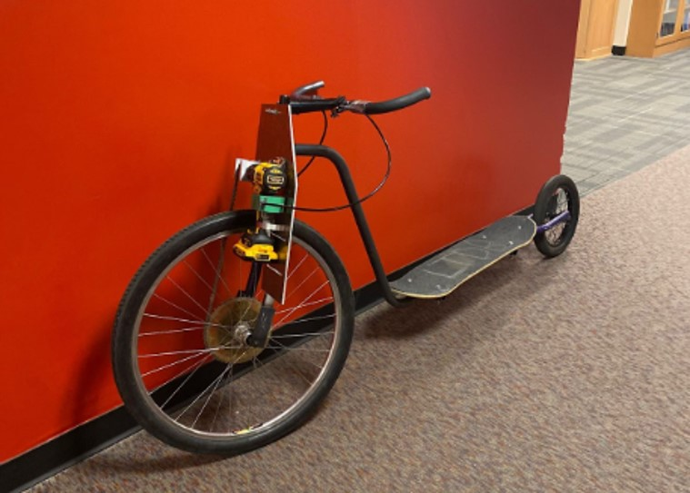

Hello! I am a passinate entry-level mechanical engineer from Orange County. In my free time, I enjoy surfing, playing golf, and working on projects to keep my mind busy.
I have a deep appreciation for science and my education, and am currently looking to start my career as an engineer. Thank you for taking the time to visit my page.
Associate's of Science degree: Engineering Physics/ Applied Physics, Santiago Canyon College
I earned my associate's degree in physics from Santiago Canyon College (SCC) in the spring (2021) with the intent of being a mechanical engineer.
Since SCC didn't have an engineering program, in my final semester I was taking a circuits class at Santa Ana College (SAC) and statics class at Orange Coast College (OCC). Being
enrolled in 3 schools at once was managable over the pandemic since classes were held remotely. Over the summer of 2021 I was also enrolled
at San Diego City College for a class in C++.
Bachelor's of Science: Mechanical Engineering, University of Colorado at Boulder
I transferred from SCC to CU Boulder in the fall (2021). There, I was able to take and complete my degree in mechanical engineering. At CU Boulder, I had the oppotunity
to work alongside more like-minded people with the common goal of being an engineer. I was exposed to more projects, harder problems, and great instructors who guided me
in the right direction.
Differential Equations: I took this class at SCC and discovered that I had a natural interest in studying DE's. I had a great professor at the time who set me up to perform well
in the class and gain an appreciation for the nature of the problems.
Invention and Innovation: This class was also known as Junior Projects at CU Boulder, but here I invented and prototyped several iterations of an automatic pot-stirrer, which can be
seen in the projects section of this website. This class also exposed me to simulating a start-up business, which included topics like interacting with stakeholders and patent information.
The final in this class was a project Expo where I was able to present my invention along with the team members who hepled out.
Computational Methods: This class was my first introduction to MATLAB, and it was concerned with understanding the back-end code to common functions, like nlinfit() for example. As a
beginner to MATLAB and programing in general at the time, this class challenged me to understand the tools I'm working with, as well as their limitations.
Data Analysis and Experimental Methods: Data analysis exposed me to various different sensors like accelerometers, strain guages, thermocouples, and pressure sensors. We used LabView and MATLAB to
record data output from various DAQs in order to do further analysis on experimental phenomena. I learned how to write proper lab reports in this class, and how to select the appropriate sensor/ DAQ
for an experiment. This class included a final project where I further explored the use of pressure sensors in a Coke and Mentos experiment. Learning the basic physics of these common sensors and what
they do proved to be a great investment of my time for future projects.
Component Design: In this class, I worked on a team to develop a drill-powered vehicle to compete against my other collegues in the class. This class exposed me to time in the machine shop, and the
opportunity to learn MIG welding. I used that new skill to weld the frame/ chassis for my team's vehicle.
System Dynamics: This class was mainly concerned with studying linear time invarient systems (LTIs). We studied performance in the S-domain by virtue of Laplace Tranforms, convolution, transfer functions, and further analysis of
electrical and mechanical systems in the frequency domain through Fourier analysis. This class had a lab section where we frequently studied the low pass RC and RRC circuit's behavior to impulse and high frequency signals.
The lab also had a Fourier Synthesis wave generation experiment with Arduino which was a fun challenge for me. I excelled in this class and felt like it was something I could see myself studying for longer.
Mechatronics and Robotics I: This is one of the best classes I've taken at CU Boulder. I worked on a team of 6 to prototype and develop an autonomous battle robot which would navigate around walls in an arena and shoot at a
balloon mounted on an enemy robot. This class exposed me to using IR sensors, motor drivers, Raspberry Pi, Python, cmd, and extensive soldering. Our team easily won 1st place in the final competition which was a real nice thing to
experience.
Intro to Probability Theory: This class was offered through the EE department at CU Boulder. I took this class because I was always weak on my probability skills and wanted to improve. We focused on discrete and continuous time
random variables, functions of random variables, families of random variables, CDFs, PDFs, and many clever derivations. This class was especially challenging to me at first, but I ended up figuring it out and had an enjoyable experience
at the end of the day. I appreciated the parallels to Fourier analysis when we were discussing Gaussian functions.
Industrial Automation: This class was essentially another mechatronics class and a sequal to system dynamics class. The goal of this class was to understand the conversion from continuous to discrete time in using hardware like the
Arduino Due. We often used function generators, oscilliscopes, Simulink, MATLAB, and DC power sources to record data for further analysis. It took a deeper dive into Fourier analysis, control theory, and embedded systems for optimization
purposes.
Senior Design Project 1 and 2: This was a year long capstone project class where I worked as the logistics manager with 8 other interdiciplinary engineers to develop and protoype a deployable black-box for Boeing.
It gave me a proper introduction to working on a larger project with a team and director, interacting with clients and stakeholders, and presenting on results and plans. This was probably the most demanding class I've ever taken, but the
experience and people I've met through it are truly special. My team and I are also very proud to say that our contributions will be seen in a future patent through Boeing for the A-ADFR.
This is a device that automatically stirrs food in a pot. A variable resitor controls speed and torque of a DC motor,
which is powered by a rechargable battery with a switch. A belt system translates torque to the stainless steel shaft and silicon paddles seen
in the images above. In this project, I modeled
each iteration of the design in SOLIDWORKS, 3D printed each evolution of prototype, and specced out the DC motor,
battery, and potentiometer. The motor was specced by calculating the torque the system would experience if the paddles were
stirring chocolate fudge. This was a really fun project to work on, and it gave me a good introduction to basic
electro-mechanical systems as well as an opportunity to present at an Expo event with my collegues.
This was another project I was working on at the same time as the AUTOSTIR in my junior year at CU Boulder.
Originally, my team and I wanted to make a drill-powered skateboard, but after realizing that a complicated gear box/ train
would be required to torque skateboard wheels at the desired forces given the drill used, we pivoted to this scooter-style vehicle. The
skateboard deck is still there to pay homage to our original efforts. This was a casual project, but it was still a good time
to ride it around campus and competing once we finished building it.
The videos above show the first match that our robot competed in, as well as the final match. In the first round, the opposing
robot couldn't identify our balloon, so we were able to shoot a lot of rounds at their balloon. The opposing robot got 2nd place overall.
The other robots in the competition had some programming issues resulting in our robot dominating the competition. This project
incorportated two infrared sensors, a Pixy 4 camera, Raspberry Pi 4 computer, Arduino MEGA microcontroller, a servo motor, motor drivers, and a brushless DC
motor with an encoder. All communication was done with simple UART serial protocol.
At the start of the competition, the robot was placed on the ground in a random orientation behind the main wall. In our Arduino sketch, we told the robot to spin counter-clockwise until the Pixy Cam sees either a red or green square on the edge of the arena. Once the Pixy Cam identified one of those colors, the Raspberry Pi tells the Arduino MCU to read the output from the two IR sensors. If the output of the two IR sensors are similar, then the robot begins to strafe side to side, peeking out on either side of the main wall looking for a blue colored balloon. If the Pixy Cam sees an enemy balloon, it will communicate to the Raspberry Pi to tell the Arduino whether to spin counter clockwise or clockwise before triggering a servo motor to release a projectile and fire at the opposing balloon. In the Pixy Cam POV image above, decreasing the distance between x_1 and x_2 would generally increase accuracy of the robot. The Raspberry Pi sends a signal to the Arduino when the signature of the balloon is between x_1 and x_2.
There are more details which can be read in the main Python script and Arduino sketch, although those files are not included on this website. This was an
extremely test-heavy project. Features like the angle of the ramp had to be tested and iterated many times. Many hours were spent debugging and learning how
to find an acceptable solution for this project and class. This was my first full-scale electro-mechanical project and I am extremely grateful for the
opportunity as well as for my knowledgeable teammates who taught me a lot about programming in the Arduino IDE, cmd, and Python.

This project is the product of a year-long senior capstone class for mechanical engineers at CU Boulder. I worked
as the logistics manager on a team with 8 other interdiciplinary engineers. One of the 8 being a computer scientist,
managing the logistics to this project presented unique challenges that I hadn't experienced before. My main duties on
the project were to record meeting minutes, action items, book meeting rooms, and write meeting agendas. I often worked
closely with the project manager to ensure that reports and action items were being met on time, and was an additional source
of communication for the team.
Besides focusing on the logistics of the project, I was in the machine shop manufacuring the housing components on a mill, keeping the product specifications accurate and up-to-date, contributing to the overall design with practical solutions, and assisting the electro-mechanical and test sides of the project when I could. I always showed up to the team's weekly meetings outside of class-work time in addition to the team's weekly client meetings. I felt like the role of the logistics manager was sometimes easy, so I was always working on something else within the project outside of my role if I could. I preffered to remain pressured to always be contributing on this project. That mentality made this project intense all the time.
Our team was chosen by Boeing to develop a proof-of-concept prototype based off a patent written by an engineer at Boeing of a deployable black-box, which would help aid in the recovery of invaluable flight data following catastophic oceanic disastors. Our team successfully met all specifications within the scope of the project, and contributed enough original thought to the original patent that we will be credited with our own patent for this A-ADFR through Boeing. The image on the right shows my team members and I holding our awards for second place, people's choice at CU Boulder's ME Expo. The team handed off the final prototype seen in the video to engineers at Boeing in Seattle to continue to iterate and test the design in order to meet the more rigorous avionics standards required today.
This was one of the most valuable experiences I've ever had, and I am extremely grateful towards my team members, our director, the program
directors, our client, and our stakeholders. I believe many of the situations experienced in that class acccurately portray what being an
engineer is all about, which is an awesome and unique thing to experience in my undergraduate education.
In my senior year of high school, I shaped this surfboard for an engineering project class. I used the first semester to clean out a shaping room,
aquire materials and tools, and build up a shaping stand. In my final semester, I shaped, glassed, and installed the fin myself. At the time,
I really didn't know what a longboard looked like so it was made by feel and without a stencil. I spent so much time on it that its very
symmetrical and well designed looking back. This board was made in 2018, but I still use it today since it's the only longboard that I have.
It surprisingly works really good still. When I have some extra money and time, I'd like to return to shaping and surfing my own boards.
I got an invitation to apply to NCAS through the STEM Academy at SCC. The application involved a series of quizzes and a final project.
the final project I chose was to model the Mars Rover in Autodesk Inventor. I chose this option because I was taught Inventor in high school
and felt like I had a shot at submitting something worthy. After over a year and a half of not using Inventor, I had to re-learn most of the
software to model what I wanted. Otherwise, what I submitted turned out be be good enough to get an invitation to visit Johnson Space Center (JSC)
in Houston, Texas for a week. NCAS offered probably the most motivating experience I've ever had.
The photo on the left shows my team and I working on our Lego Mars rover, which was for a final competition and our individual evaluations. We were all motivated
to believe that we have "The Right Stuff" to work at NASA in the future, and to never give up. Failure is not an option. I got to experience this just
before the pandemic regulated future NCAS alum from physically visiting headquarters, so I am still extremely grateful for the experience I had.
February 2023: Passed the Fundamentals of Engineering (FE) Mechanical exam
December 2021: Earned my Certified SOLIDWORKS Associate in Mechanical Design (CSWA) certification